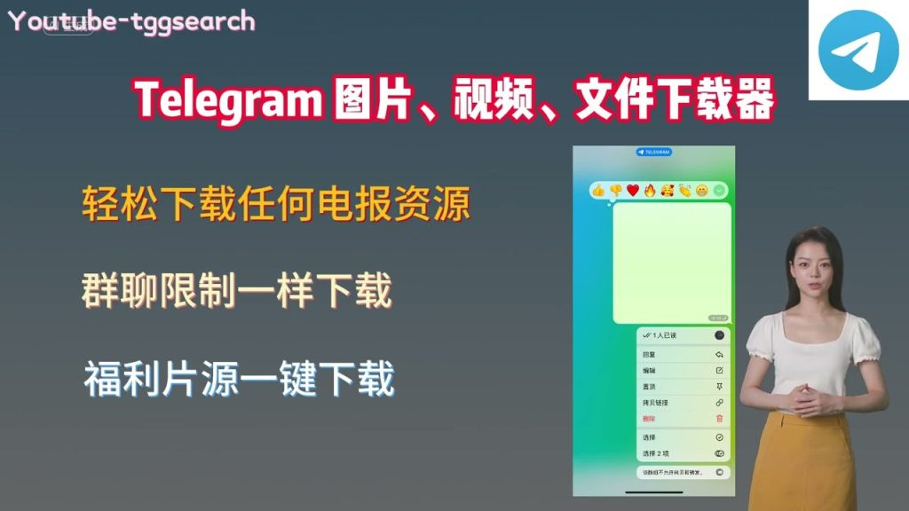

Telegram图片下载器是什么？
Telegram图片下载器是一种工具或软件，用户可以通过它从Telegram聊天应用中下载图片。这些下载器可能是独立的应用程序或作为Telegram客户端功能的一部分，旨在帮助用户保存他们接收到的图像到设备上。使用这种工具，用户可以更方便地管理和存储聊天中的媒体内容。

Telegram图片下载器的基本功能介绍
Telegram图片下载器如何工作
- 连接到Telegram API: Telegram图片下载器通常通过Telegram API连接到用户的Telegram账户，从而访问用户的消息和媒体库。
- 识别图片文件: 下载器会分析用户的聊天记录，自动识别出图片和其他媒体文件，这些文件包括用户发送和接收的所有图片。
- 下载并保存: 用户可以选择下载的图片，下载器会将这些图片保存到用户的设备上，通常用户可以指定保存的文件夹或路径。
Telegram图片下载器支持的格式和类型
- 支持多种图片格式: 常见的图片格式如JPEG、PNG和GIF等都可以通过这类下载器下载。这确保了从Telegram中接收到的几乎所有图片都能被保存下来。
- 视频和动态图片支持: 除了静态图片，一些高级的图片下载器还支持下载视频文件和动态图片，如GIFs。
- 文件压缩与质量选择: 用户可以选择下载前对图片进行压缩，或选择不同的图片质量等级进行下载，以便节省存储空间或保持原有图片质量。
如何安全使用Telegram图片下载器
确保个人数据安全的措施
- 使用官方或信誉良好的下载器: 确保下载的Telegram图片下载器来自官方渠道或已被广泛验证的可信源。使用未经验证的软件可能会导致数据泄露或安全风险。
- 定期更新软件: 保持图片下载器的最新状态是防止潜在安全漏洞的关键。开发者通常会修补已知的安全问题，并通过更新来增强软件的安全性。
- 限制应用权限: 在安装和使用图片下载器时，只赋予它必需的权限。例如，如果下载器请求访问你的联系人或位置信息，这可能是一个警示信号，因为这类权限对于其功能来说通常是不必要的。
避免使用非官方图片下载器的风险
- 意识到恶意软件的风险: 非官方下载器可能含有恶意软件，这些软件能够窃取个人信息、发送垃圾邮件或者在不知情的情况下控制你的设备。
- 检查用户反馈和评级: 在下载任何图片下载器之前，查看其他用户的评价和反馈可以提供宝贵的信息，帮助识别那些可能含有恶意行为的应用程序。
- 使用防病毒和防恶意软件工具: 安装可靠的安全软件，并让它在设备上运行，可以帮助检测和阻止可能的威胁，特别是当使用非官方渠道下载应用程序时。
Telegram图片下载器的安装指南
在Android设备上安装Telegram图片下载器
- 从可信应用商店下载: 前往Google Play商店或其他可信的Android应用市场搜索并下载Telegram图片下载器。避免从未知来源下载APK文件，以减少遭受恶意软件攻击的风险。
- 允许安装未知应用: 如果你从官方网站直接下载APK文件，需要在手机的设置中开启“安装未知应用”权限。前往“设置” > “安全性” > “安装未知应用”，选择浏览器或文件管理器应用并允许从此来源安装应用。
- 安装并授予权限: 打开下载的文件开始安装过程。安装完成后，打开应用并根据需要授权应用访问你的存储空间以保存下载的图片。
在iOS设备上安装Telegram图片下载器
- 通过App Store安装: 访问iOS的App Store，搜索Telegram图片下载器。选择信誉良好的应用进行下载和安装，确保应用的开发者是可信赖的。
- 检查应用权限: 在安装应用后，iOS可能会要求确认应用权限。确保图片下载器仅请求访问你的相册或必要的存储权限，避免授予不相关的权限。
- 配置应用设置: 安装并打开应用后，根据提示进行初步设置。这可能包括登录你的Telegram账号，设置图片下载路径，或者配置其他相关选项。
Telegram图片下载器的高级功能
批量下载图片的功能介绍
- 选择多个聊天进行下载: 高级Telegram图片下载器通常允许用户从多个聊天同时选择图片进行下载。这意味着用户可以一次性选定多个聊天会话，并从中批量下载所有图片。
- 过滤和排序选项: 用户可以设置过滤条件，如日期范围、发送者或文件类型，来精确选择需要下载的图片。此外，还可以对结果进行排序，例如按日期或大小排序，以便更系统地进行下载。
- 后台下载支持: 大多数高级下载器支持后台下载功能，这使用户可以在下载大量图片时继续使用手机进行其他活动。下载过程中断或完成后，应用会通知用户。
自动化下载设置教程
- 配置自动下载规则: 在下载器设置中，用户可以创建规则来自动下载符合特定条件的新图片。例如，可以设置为自动下载来自特定联系人或群组的所有新图片。
- 使用任务计划器: 部分高级下载器提供任务计划功能，允许用户设定特定时间自动启动下载任务。这样，用户可以在夜间或特定低峰时段自动进行图片下载，以免影响白天的网络使用。
- 通知和日志功能: 自动下载完成后，高级下载器通常会提供详细的下载日志和状态通知。这样用户可以轻松追踪哪些图片已被下载，以及是否有下载失败需要重新下载的情况。

与其他应用比较Telegram图片下载器
Telegram图片下载器与WhatsApp图片保存功能的对比
- 保存方法的差异: Telegram图片下载器通常允许用户从Telegram服务器上下载并保存图片，而WhatsApp的图片保存功能主要是将接收到的图片保存到手机的本地存储或相册中。
- 自动化功能: Telegram下载器经常提供更多自动化选项，如根据用户设置的规则自动下载图片。相比之下，WhatsApp要求用户手动保存每张图片，没有自动保存所有接收图片的功能。
- 批量操作: 在Telegram下载器中，用户可以批量选择和下载图片，这一点在WhatsApp中通常不可行。WhatsApp用户需要逐一选择每张图片进行保存，这可能在处理大量数据时显得不那么高效。
Telegram图片下载器与其他社交媒体下载工具的比较
- 下载范围和灵活性: 与专门为社交媒体平台如Instagram或Facebook设计的下载工具相比，Telegram图片下载器通常提供更广泛的下载选项和更高的灵活性，包括多种格式和批量下载能力。
- 用户界面和体验: Telegram图片下载器的用户界面通常更为专业和定制化，针对Telegram平台优化。而其他社交媒体下载工具可能需要适应多种平台，界面和功能可能不如专用工具那么精细。
- 安全性和隐私保护: 因为Telegram自身的安全性和隐私保护措施较强，使用其图片下载器通常也较为安全。相比之下，其他社交媒体平台的下载工具可能涉及更多的隐私风险，尤其是那些未经验证的第三方应用。
Telegram图片下载器可以下载哪些类型的文件？
Telegram图片下载器不仅限于下载图片，它通常也能下载视频和音频文件。支持的具体文件类型包括但不限于JPEG、PNG、GIF、MP4等。
使用Telegram图片下载器安全吗？
使用官方或信誉良好的Telegram图片下载器通常是安全的。确保下载源可靠并定期更新软件可以帮助保护您的设备免受恶意软件和病毒的威胁。
Telegram图片下载器如何处理大量媒体下载？
高级的Telegram图片下载器通常提供批量下载功能，允许用户选择多个聊天或整个聊天历史进行下载。此外，一些下载器还支持设置下载优先级和自动化下载任务，有效管理大量数据的下载和存储。
Telegram中文 其他新闻
电报怎么下载？
要下载电报（Telegram），可以通过以下步骤：在手机上，打开App Store（iOS设备）或Google […]
2025 年 04 月 06 日
Telegram是匿名的吗？
Telegram 在某种程度上提供了匿名性，但不是完全匿名的。用户可以通过用户名与他人交流，而不必公开电话号码 […]
2025 年 05 月 11 日
Telegram是什么聊天软件？
Telegram是一款基于云的即时通讯软件，强调速度和安全性。它支持文字、语音、视频消息的发送，还提供群组和频 […]
2025 年 08 月 05 日
telegram中文版app
Telegram中文版App可以通过在手机上的Telegram应用内设置语言选项来实现。打开应用，进入“设置” […]
2024 年 05 月 26 日